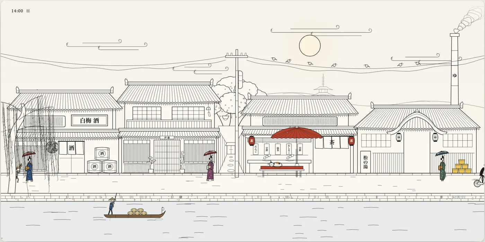
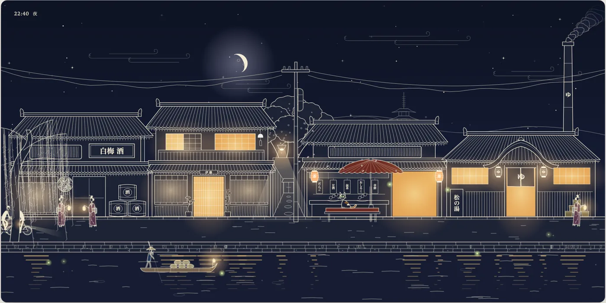

这是一套给 Claude 用的技能，也是一个很小、没有依赖的 TypeScript 库。它要做的不是一段会播完的片子，而是可以嵌在页面里的线描组件：墨线人物会走路、作出反应，整条街可以从白天走到夜里。所有东西都在 SVG 里当场画出来，放大仍清晰，也能响应指针。本页以这个项目为中心。
media/day.png 与 media/night.png 的压缩静帧（作者自己的线描，非真人照片），按 MIT 使用并保留版权声明。仓库中的 GIF 预览未转载，也未下载视频。
media/day.png）。© 2026 JDhruv14，MIT License。一、这是什么
JDhruv14/line-art-animation 在仓库简介里写：一套 Claude 技能，外加一个小型 TypeScript 库，用来做会动的线描 SVG 组件——会走路、会反应的墨线人物，以及带昼夜循环的场景。作者 GitHub 显示名为 Dhruv Jaradi，个人站点是 jdhruv.dev，X 账号为 @dhruvtwt_。
2026-11-10（新加坡时间）打开的仓库首页显示：默认分支 main，主题标签为 claude-skill、line-art、svg-animation、typescript，提交次数为 1，创建时间为 2026-11-10 17:25（新加坡时间；上游记录为 09:25:25 UTC）。页面内嵌数据里的 star 数约为 4，会变 ⚠️。根目录可见 LICENSE、README.md、SKILL.md、package.json（版本 0.1.0，private: true，license 字段亦为 MIT）、两个示例、四个库文件，以及 references/、scripts/、media/。
README 只说明在本地运行 npm run dev（http://localhost:5173）。本次未发现仓库文档里给出的已托管演示地址，本站也没有把示例跑起来 ⚠️。
二、库怎么画、怎么走
lib/ 里有四个不依赖外部包的 TypeScript 模块，源码与 README 的对应关系可以核上：
ink.ts：笔、纸和人物共用的绘画基元。人物在自己的坐标系里画——大约高 95 个单位，脚落在y = 120——再用place()放进场景。墨是currentColor，纸色填充带pp类，整幅画可以一次改色。四肢由limb()画成两道不相交于远端的开放笔触，中间填纸，这是这种风格的签名。源码里还有一层很轻的位移与模糊滤镜，让线条读起来像墨，而不是发亮的矢量边。gait.ts：走、拖步和跑的求解器，预设为walk、shuffle、run。它不是给腿做正弦起伏。撑地的脚以正好等于行进速度的速度向后滑，所以人物按gait.speed × 缩放移动时，那只脚会钉在地上；摆动腿走最小加加速度路径；迈出前脚跟先离地、改用脚尖；髋的高度由撑地的腿能够到的位置决定，于是每一步中间身体升起，双脚都在地上时又沉下去。motion.ts：弹簧、摆、指针带起的风、按名称排列的姿态序列，以及带种子的随机数——后者是为了让一场戏每次打开都长得一样。daynight.ts：palette(τ)给出τ ∈ [0, 1)时的天、纸、墨，以及灯火、夜色和晨昏的强度。白天是暖纸上的深墨；夜里反过来，变成靛色纸上的浅墨，窗户和灯笼带着暖光。源码注释写，墨色翻转发生在纸色半暗的时候，好让低对比的那一瞬在默认的三分钟一天里大约只持续一秒。
衣服不单独做刚体动画。README 写，先把腿求解出来（即使被衣摆挡住），再从膝和踝去画大衣或着物的下摆，布料就会随着步幅开合；袖子、围巾和包则挂在弹簧上。示例 walker.ts 正是这样画的。
三、两个例子：一个行人，和一条会过昼夜的街
本地开发页是一个很短的目录，只链到两个例子。Walker 被写成最小完整示例：一个提着公文包、围着红围巾的人走过卡片，点他会摘一下帽子，移动指针可以吹动围巾。README 写它「大约 150 行」；本次读到的 examples/walker/walker.ts 是 109 行（含注释与导入），与「约 150 行」不完全吻合 ⚠️。
Village 是一场完整的戏。页面标题是「Ink Village」，提示语为 “drag the sun across the sky · click anyone and anything”。源码和无障碍说明写的是一条日本街道：町屋、茶屋、运河边的澡堂，从黎明到夜里。默认情况下，一整天在 180 秒里走完（可用 ?day= 改掉）；?start= 只设定起始时刻，?tau= 把时间钉住，?debug 则关掉 requestAnimationFrame，改用 window.__step 精确步进。源码还规定：人物始终按自然步速走，压缩一天时只让路人更勤地出现，而不是把步态加快。
主文件会拼起天空、街道、运河、着物行人、骑车的人、孩子、船、猫、麻雀、燕子、花瓣和烟。可以点的东西比「十来种」还多一些：灯笼、暖帘、障子窗、风铃、雨搭（会抖落花瓣）、电线上的麻雀、猫、船、柳树、水面，以及路上的人。指针移动会起风。夜里，窗户和灯笼亮起来，并在水里留下倒影。这些都写在 examples/village/main.ts 里；街道和人物还分在 houses.ts、people.ts 等模块中。本站未在浏览器里打开过这场戏 ⚠️。
media/day.png，© 2026 JDhruv14，MIT License。
media/night.png，© 2026 JDhruv14，MIT License。四、技能怎么用，以及它在防什么
安装方式是把仓库克隆进 Claude Code 的技能目录，例如 ~/.claude/skills/line-art-animation，或某个项目的 .claude/skills/。然后用自然语言提要求：一座黎明的面包店、把某段参考片做成循环组件、给场景加上昼夜并导出视频。
README 对工作顺序写得很清楚：Claude 先读 SKILL.md，把 lib/ 拷进项目，先交一个人物请你过目，再画其余部分，并且在交出来之前逐帧检查运动。技能文档把这一点写得更硬：一次把整组组件都做出来，看起来会像同一张脸；先交出一角，是为了把标准定下来。
SKILL.md 和 references/ 里还有一组风格规则，本页只作转述，不作全文翻译。其中反复出现的几条是：四肢必须是两道开放笔触；线条要弯曲，不要靠尺；人物在自己的坐标系里画；脚要钉在地上，不要用正弦去「蹦」；组件是卡片，页面背景不要跟着场景变色；互动应当是世界在反应——鞠躬、摘帽、猫伸懒腰、灯笼摆一下、鸟散开——而不是场景里再放按钮；若要求「像这样，但是新的」，只保留媒介、笔触、比例和节奏，人物和道具要另起。本站未安装、也未让 Claude 按这套技能生成过新场景 ⚠️。
五、出视频，以及对照参考片
出视频的路径是确定性的。先本地打开开发服务器，再用 scripts/capture.ts 通过 DevTools 协议驱动无头 Chrome，在 ?debug 模式下精确步进并截出 PNG，最后交给 ffmpeg。脚本不另装 npm 依赖，截图之间把场景推进整整一帧，所以成片不取决于机器快慢。它会寻找本机的 Chrome 或 Chromium，或使用环境变量 $CHROME。
若要跟一段参考片对齐，仓库提供 scripts/clip.ts 和 scripts/frames.sh：量一段区域的循环长度，跟踪每帧里的暗斑（例如脚），或导出带测量网格的帧。references/matching.md 还提醒，社交媒体上的片子多为可变帧率，应当先按时间重采样，再用叠加模式检查绘画是否贴合。
六、核实与注记
- 合规：先读 github.com/robots.txt（User-agent: *）。只打开仓库公开首页与作者公开主页；未请求 github.com 的
/raw/、/tree/、/archive/、/commits/，也未调用 api.github.com。LICENSE、README、SKILL.md、库与示例源码、参考文档及media/下的静帧 PNG，经 raw.githubusercontent.com 读取（该主机 robots.txt 为 404）。未下载或转载village.gif、walker.gif，未导出视频。 - 许可证（R13）：2026-11-10 读取
raw.githubusercontent.com/JDhruv14/line-art-animation/main/LICENSE，全文为 MIT License，版权人为 JDhruv14，年份 2026。仓库页与package.json的 license 字段一致。 - 仓库页内嵌的 star 数约为 4（2026-11-10 所见）⚠️，会变。创建当日仅 1 次提交，亦以当时页面为准。
- README 写 Walker「大约 150 行」；本次读到的
walker.ts为 109 行 ⚠️。 - 本站未安装技能，未运行
npm run dev，未做 typecheck 或抓帧，也未在真实标签页里核对 60 帧。互动与昼夜效果按源码和 README 转述 ⚠️。 - README 未给出已托管的在线演示。作者个人站点存在，本次未把它当作本项目的演示页来抓取。
附录一：README 全文中译
译文依据 2026-11-10 读取的 README.md（MIT License）。仓库中的 GIF 预览未转载；白昼与夜晚静帧见正文。文内命令与代码保持原样，链接指向原仓库。
line-art-animation
一套 Claude 技能，外加一个很小的 TypeScript 库，用来做会动的线描组件：纸上的墨线人物会走路、乘车、作出反应，场景会从白天走到夜里。全部都在 SVG 里当场画出来，所以放大缩小都清晰，也能响应指针。
（此处原文配有村子从傍晚走到夜里的 GIF，以及昼 / 夜两张静帧。静帧见上文。）
仓库里有什么
SKILL.md、references/— 技能本身：工作流程、让这种风格成立的规则，以及风格、运动、场景、核对、对照参考片、导出视频的指南。lib/— 四个无依赖的 TypeScript 模块：绘画基元（ink.ts）、走 / 跑求解器（gait.ts）、弹簧、摆和风（motion.ts），以及一天里各时刻的调色板（daynight.ts）。examples/walker/— 大约 150 行画出一个人：提着公文包走过卡片；点他，他会摘一下帽子。examples/village/— 一整场戏：运河边的町屋街道、茶屋和澡堂，按时刻表出现的路人，一只猫、鸟、船夫，亮着的窗户和倒影，大约十来种互动。scripts/— 用来稳定抓帧做视频，以及测量参考片的工具。
安装技能
若用 Claude Code，把它克隆进技能目录：
git clone https://github.com/JDhruv14/line-art-animation ~/.claude/skills/line-art-animation或者放进某个项目的 .claude/skills/。然后直接说你想要什么，例如：
- 「做一段烘焙店黎明的线描动画：面包师端着托盘，炉子冒着蒸汽，窗里有一只猫。」
- 「把这段片子做成循环的线描组件，步态要跟得一模一样。」（附上或链到片子）
- 「给这场戏加上昼夜循环，并导出一段 30 秒的 1080p 视频。」
Claude 会读 SKILL.md，把 lib/ 拷进你的项目，先交出一个人物请你过目，再画其余部分，并在交出来之前逐帧检查运动。
运行示例
需要 Node 22.18 或更新版本。
npm install
npm run dev # http://localhost:5173在村子里，拖动天上的太阳或月亮来改时间，移动指针可以起风，点击人物、窗户、灯笼、风铃、猫、鸟或水面。网址参数：?start=0.9 设定起始时刻（0 是午夜，0.5 是正午），?tau=0.5 把时间钉住，?day=30 让一整天在 30 秒内走完，?debug 则改用手控步进。
npm run typecheck # 对 lib/ 和 walker 做严格检查
npm run build库的要点
（此处原文配有行人示例的 GIF：一个戴红围巾、提着公文包的人走过路灯。本页未转载该动图。）
人物在自己的坐标系里画，大约高 95 个单位，脚落在 y = 120，再用变换放进场景。四肢是两道开着的笔触，沿着关节的一条曲线走，这正是它读起来像手绘墨线的主要原因。
下面是一段完整程序，在纸上画出一双正在走路的腿（行人示例还会加上身体、手臂、衣服，以及点击后的反应）：
import { el, limb, shoe, place, inkDefs, run } from './lib/ink.ts';
import { gait } from './lib/gait.ts';
const svg = el('svg', { viewBox: '0 0 480 240' });
document.body.append(svg);
const fig = el('g', { filter: inkDefs(svg).filter }, svg);
const legs = [limb(fig, 4.2), limb(fig, 4.2)];
const shoes = [el('path', {}, fig), el('path', {}, fig)];
const walk = gait({ kind: 'walk' });
let phase = 0, x = 60;
run((t, dt) => {
phase += dt / walk.period;
x += walk.speed * 1.25 * dt; // move at the gait's speed and the feet stay planted
place(fig, x % 520 - 20, 196, 1, 1.25);
const p = walk.pose(phase);
p.feet.forEach((foot, i) => {
legs[i].draw([p.hip, foot.knee, foot.ankle]);
shoe(shoes[i], foot.ankle, foot.pitch);
});
});gait() 是在求解腿，而不是给腿做关键帧动画：撑地的那只脚会以正好等于行进速度的速度向后滑，摆动腿走一条最小加加速度路径，每一步迈出前脚跟会先离开、改用脚尖撑地，髋的高度则由撑地的腿能够到的位置决定，所以身体会在每一步中间升起，双脚都在地上时又沉下去。衣服再顺着膝和踝来画，大衣或着物就会随着步幅开合。
palette(τ) 给出一天中任意时刻的天空、纸色和墨色。墨是 currentColor，纸色填充带有 pp 类，因此 applyPalette() 能在夜里把整幅画改成靛色纸上的浅墨，同时让窗户和灯笼亮起来。
导出视频
npm run dev
node scripts/capture.ts "http://localhost:5173/examples/village/?debug&capture&day=30&start=0.3" \
captures/village 900 30 1920 1080
ffmpeg -framerate 30 -i captures/village/f%04d.png -c:v libx264 -preset slow -crf 15 \
-pix_fmt yuv420p -movflags +faststart -tune animation village.mp4抓帧脚本通过 DevTools 协议驱动无头 Chrome，不另装 npm 依赖，并在两次截图之间把场景精确推进一步，所以结果不取决于机器快慢。它会寻找本机的 Chrome 或 Chromium，或使用 $CHROME。需要 ffmpeg。
对照参考片
node scripts/clip.ts period clip.mp4 X Y W H # loop length of a region
node scripts/clip.ts blobs clip.mp4 X Y W H Y0 Y1 # dark blobs per frame, e.g. feet
scripts/frames.sh clip.mp4 X Y W H out/ # frames with a measuring gridreferences/matching.md 写了其余步骤：为什么要按时间重采样（社交媒体上的片子多为可变帧率），怎样从网格上读姿势，以及用叠加模式检查你的画是否贴合原片。
许可证
MIT
附录二：许可证原文
以下为 2026-11-10 自 上游 LICENSE 读取的全文。这不是法律意见。
MIT License
Copyright (c) 2026 JDhruv14
Permission is hereby granted, free of charge, to any person obtaining a copy
of this software and associated documentation files (the "Software"), to deal
in the Software without restriction, including without limitation the rights
to use, copy, modify, merge, publish, distribute, sublicense, and/or sell
copies of the Software, and to permit persons to whom the Software is
furnished to do so, subject to the following conditions:
The above copyright notice and this permission notice shall be included in all
copies or substantial portions of the Software.
THE SOFTWARE IS PROVIDED "AS IS", WITHOUT WARRANTY OF ANY KIND, EXPRESS OR
IMPLIED, INCLUDING BUT NOT LIMITED TO THE WARRANTIES OF MERCHANTABILITY,
FITNESS FOR A PARTICULAR PURPOSE AND NONINFRINGEMENT. IN NO EVENT SHALL THE
AUTHORS OR COPYRIGHT HOLDERS BE LIABLE FOR ANY CLAIM, DAMAGES OR OTHER
LIABILITY, WHETHER IN AN ACTION OF CONTRACT, TORT OR OTHERWISE, ARISING FROM,
OUT OF OR IN CONNECTION WITH THE SOFTWARE OR THE USE OR OTHER DEALINGS IN THE
SOFTWARE.